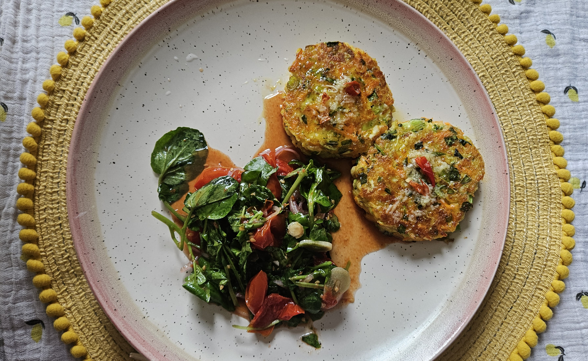

приготовление:
-
Разогреть духовку до 150 градусов. 500 гр. черри томатов помыть, разрезать пополам, выложить на противень/форму для запекания. Посолить, посахарить, посыпать листиками тимьяна, 1 крупный или 2 поменьше зубчика чеснока нарезать тонко и посыпать помидоры, полить оливковым маслом. Отправить запекаться 90 минут.
-
Для приготовления фриттерс из халуми натереть 2 моркови и 1 цукини на крупной тёрке, положить морковь и цукини в дуршлаг и посыпать хорошей щепоткой соли. Подождать 5 минут и отжать, чтобы убрать лишнюю влагу.
-
Натереть 250 г халуми. Помыть и порезать 2–4 стебля зелёного лука (или chives) и небольшой пучок кориандра. Смешать все подготовленные ингредиенты в миске. Добавить 2 взбитых яйца и хорошо перемешать, затем добавить 2 ст. л. панировочных сухарей. Сформировать котлетки-фриттерс толщиной около 1 см.
-
Обжаривать котлетки-фриттерс на среднем огне на масле до тёмно-золотистой и хрустящей корочки с обеих сторон, примерно по 5 минут.
-
Пока фриттерс жарятся, поместить все ингредиенты для соуса в миску и хорошо перемешать до растворения сахара: чили-масло, кусочек свежего имбиря размером 2 см, 2 ч. л. сахара, 3 ст. л. рисового уксуса, 1 ст. л. оливкового масла и щепотку соли.
-
Подавать фриттерс горячими, полив острым соусом, с салатом из смеси зелени / крес-салата, помидорами из духовки и полукольцами лука-шалота. Полить бальзамическим уксусом и оливковым маслом, посолить.